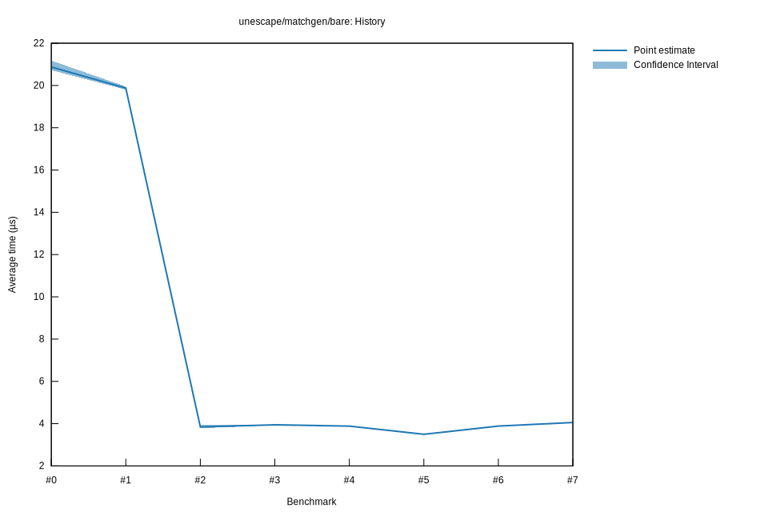

# 82025-11-02T18:37:40-08:00
|
Lower Bound |
Estimate |
Upper Bound |
| Value: |
4.06µs |
4.07µs |
4.09µs |
| Throughput: |
3973.30MiB/s |
3958.24MiB/s |
3941.82MiB/s |
| Change in Value: |
+8.4592% |
+9.6087% |
+10.532% |
| Change in Throughput: |
-7.7994% |
-8.7664% |
-9.5282% |
No change in performance detected.
# 72025-11-02T17:49:43-08:00
|
Lower Bound |
Estimate |
Upper Bound |
| Value: |
3.72µs |
3.73µs |
3.75µs |
| Throughput: |
4332.25MiB/s |
4317.43MiB/s |
4302.03MiB/s |
| Change in Value: |
-5.1394% |
-4.1918% |
-2.9200% |
| Change in Throughput: |
+5.4179% |
+4.3752% |
+3.0078% |
No change in performance detected.
# 62025-10-31T17:55:23-07:00
|
Lower Bound |
Estimate |
Upper Bound |
| Value: |
3.87µs |
3.89µs |
3.90µs |
| Throughput: |
4165.14MiB/s |
4147.10MiB/s |
4127.75MiB/s |
| Change in Value: |
+10.332% |
+11.393% |
+12.493% |
| Change in Throughput: |
-9.3644% |
-10.228% |
-11.105% |
No change in performance detected.
# 52025-10-31T17:48:46-07:00
|
Lower Bound |
Estimate |
Upper Bound |
| Value: |
3.47µs |
3.50µs |
3.52µs |
| Throughput: |
4637.10MiB/s |
4608.92MiB/s |
4573.87MiB/s |
| Change in Value: |
-10.943% |
-10.184% |
-9.4175% |
| Change in Throughput: |
+12.287% |
+11.339% |
+10.397% |
No change in performance detected.
# 42025-10-29T22:27:35-07:00
|
Lower Bound |
Estimate |
Upper Bound |
| Value: |
3.86µs |
3.88µs |
3.90µs |
| Throughput: |
4169.82MiB/s |
4149.72MiB/s |
4128.07MiB/s |
| Change in Value: |
-2.1379% |
-1.2614% |
-0.4164% |
| Change in Throughput: |
+2.1846% |
+1.2775% |
+0.4181% |
No change in performance detected.
# 32025-10-29T22:20:59-07:00
|
Lower Bound |
Estimate |
Upper Bound |
| Value: |
3.93µs |
3.95µs |
3.97µs |
| Throughput: |
4104.46MiB/s |
4084.26MiB/s |
4062.94MiB/s |
| Change in Value: |
+0.6664% |
+2.4161% |
+4.0170% |
| Change in Throughput: |
-0.6620% |
-2.3591% |
-3.8619% |
No change in performance detected.
# 22025-10-29T19:45:23-07:00
|
Lower Bound |
Estimate |
Upper Bound |
| Value: |
3.78µs |
3.85µs |
3.93µs |
| Throughput: |
4258.11MiB/s |
4190.37MiB/s |
4102.49MiB/s |
| Change in Value: |
-80.958% |
-80.642% |
-80.319% |
| Change in Throughput: |
+425.15% |
+416.59% |
+408.10% |
No change in performance detected.
# 12025-10-29T19:02:12-07:00
|
Lower Bound |
Estimate |
Upper Bound |
| Value: |
19.80µs |
19.87µs |
19.95µs |
| Throughput: |
813.70MiB/s |
810.74MiB/s |
807.64MiB/s |
| Change in Value: |
-4.9322% |
-4.0897% |
-3.1903% |
| Change in Throughput: |
+5.1881% |
+4.2641% |
+3.2955% |
No change in performance detected.
# 02025-10-26T16:46:32-07:00
|
Lower Bound |
Estimate |
Upper Bound |
| Value: |
20.72µs |
20.87µs |
21.18µs |
| Throughput: |
777.62MiB/s |
771.96MiB/s |
760.89MiB/s |